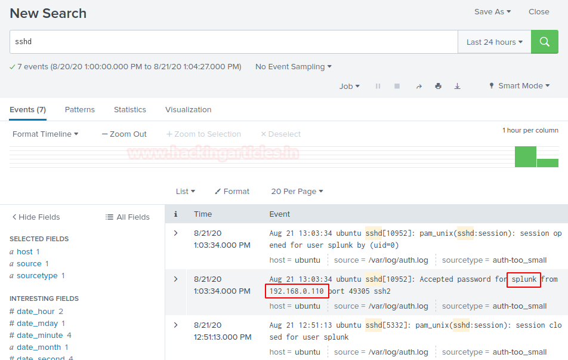
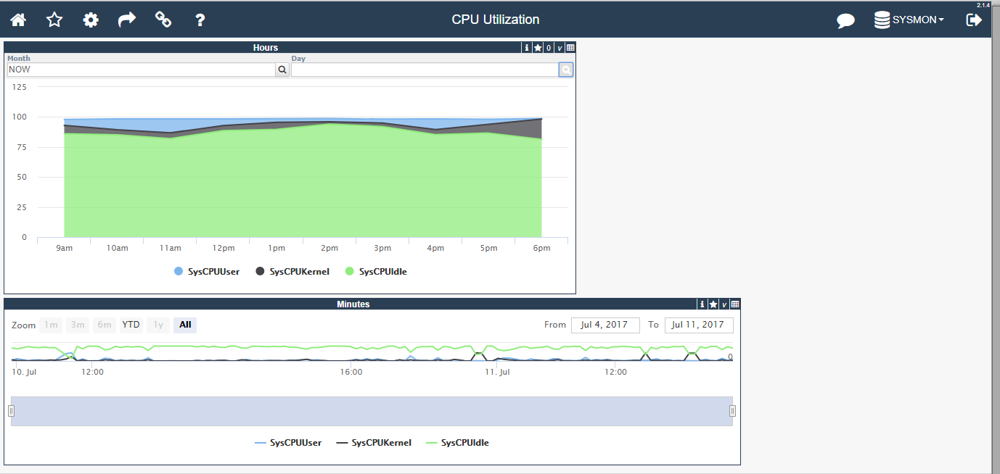
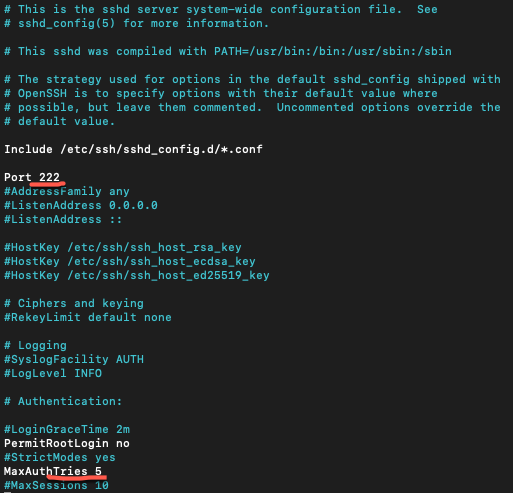
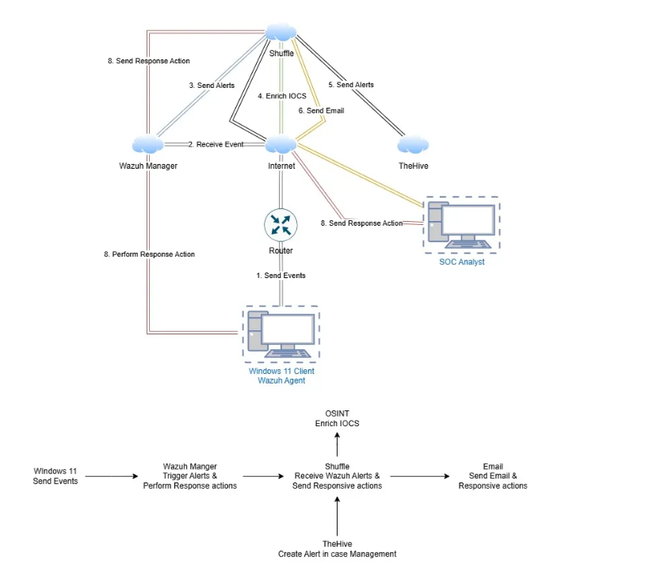
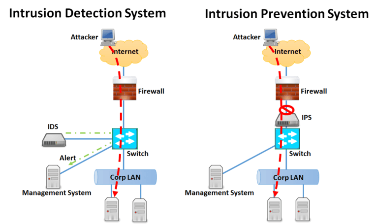
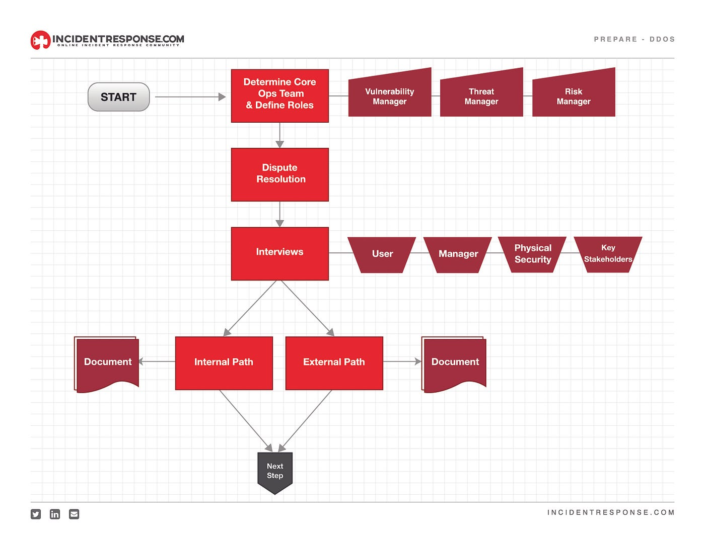

Junior SOC Analyst
"Defending the digital frontier one packet at a time. I'm Mahmoud Atef, a Junior SOC Analyst dedicated to turning complex threats into solved cases. Ready to protect your infrastructure"

"Defending the digital frontier one packet at a time. I'm Mahmoud Atef, a Junior SOC Analyst dedicated to turning complex threats into solved cases. Ready to protect your infrastructure"
I am a cybersecurity-focused engineer with a strong foundation in network technologies and security operations. My work centers around monitoring, analyzing, and securing network environments against potential threats.
With practical exposure to SIEM platforms and log analysis, I focus on identifying suspicious activities, understanding attack patterns, and strengthening defensive strategies. I am passionate about network security, threat detection, and building secure infrastructures that support business continuity.
Driven by curiosity and continuous improvement, I am committed to developing into a highly capable SOC Analyst and network security professional.

Configured log forwarding and centralized monitoring from multiple systems to detect and alert on suspicious activity.

Implemented advanced Windows Event and Sysmon monitoring to gain deep visibility into system-level security events.

Secured Linux servers by configuring UFW firewalls, hardening SSH restrictions, and auditing system logs for anomalies.

Developing Python and Bash scripts to automate threat detection workflows and streamline alerting in SIEM environments.

Setting up simulated networks with Snort/Suricata IDS/IPS to analyze and block real-time network attacks.

Building a step-by-step lab environment to practice responding to common scenarios like phishing and malware outbreaks.
Monitoring network traffic and analyzing suspicious activities using SIEM tools and packet analysis techniques. Focused on identifying anomalies, potential intrusions, and unauthorized access attempts within network environments.
Analyzing system and network logs to detect indicators of compromise (IOCs), unusual behavior, and potential security incidents. Experienced in working with event logs and security monitoring platforms.
Assisting in investigating security events, understanding attack patterns, and documenting findings. Focused on improving response time and strengthening defensive strategies.
Identifying security weaknesses in systems and network configurations and applying security best practices to reduce exposure and improve overall infrastructure resilience.
Monitoring network traffic, analyzing suspicious activity, and maintaining secure network environments.
Hands-on experience with Splunk and log forwarding for detecting anomalies and threats.
TCP/IP, DNS, DHCP, Wireshark, packet analysis for traffic inspection and troubleshooting.
Securing servers, managing permissions, firewall configurations, and auditing logs.
Investigating security events, identifying patterns, and supporting mitigation actions.
Detecting malicious activity, analyzing indicators of compromise (IOCs), and strengthening defenses.
Configuring firewalls, security policies, and endpoint protection for secure operations.
Writing scripts to automate monitoring, alerts, and repetitive security tasks.
Currently pursuing a Bachelor of Science in Computer Engineering, building a strong foundation in hardware, software, and network architectures.
Continuously upskilling through industry-recognized certifications and intensive training programs: